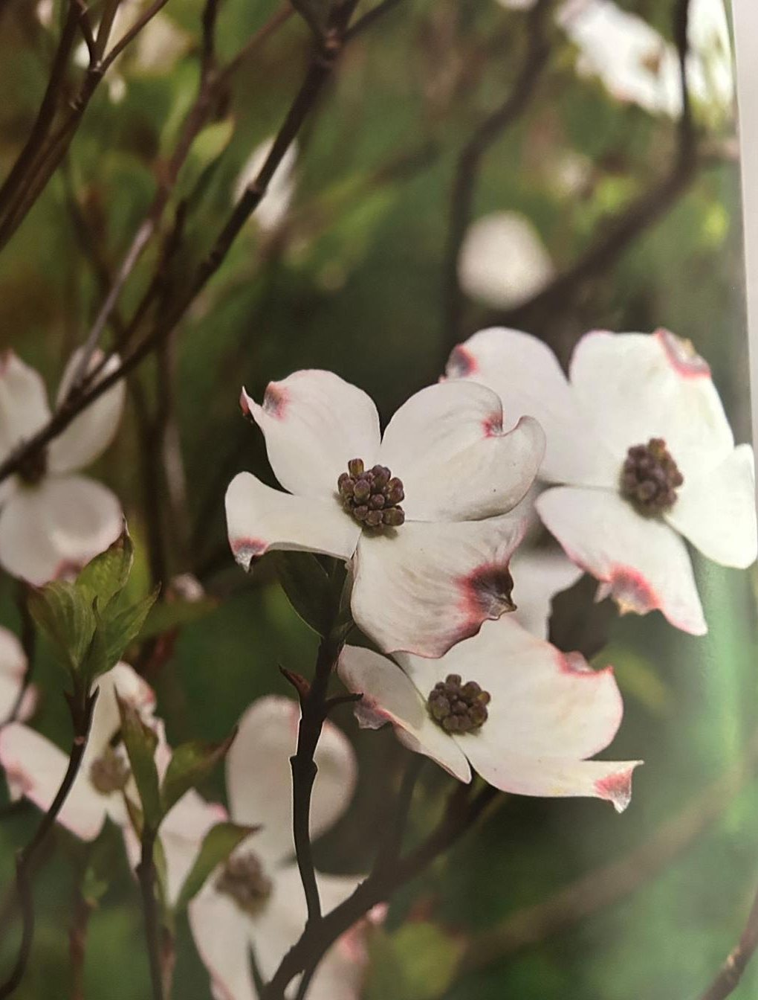

Groepen › Oude Wereld
39. Japan, Honshu

Het grootste, centraal gelegen eiland van Japan, Honshu, is een bergachtig gebied, nog steeds ten prooi aan vulkanische en seismische activiteit. Er zijn grote klimaatverschillen tussen hoger en lager gelegen zones en tussen het westen, onder invloed van warme stromingen in de Japanse Zee, en het oosten, meer onderhevig aan de koude Chishima stroming van uit de Beringzee. Arboretumgroep 39 geeft een beeld van de bossen op Honshu, van zuid naar noord. In de kuststroken van het warmere zuiden komen Japanse rode den en Japanse zwarte den veel voor. Op betere gronden staan loofbossen van eikensoorten, waaronder Japanse Keizereik, en Castanopsis en Sieboldbeuk, waaronder zich hogerop zilversparren en andere coniferen mengen. Het coniferenbos van de gematigd warme bergzones kwamen we hierboven op de Fuji-berg al tegen. In het gematigd koude woud van de oostelijke bergruggen en het subalpiene bos van de hoogste zones, krijgen spar en zilverspar, naast lork de overhand. In de laatste zone komen ook enkele zeldzame endemische soorten voor : de Schijnlevensboom en de Koyamaspar, die in Subgroep 39C te vinden zijn. Groep 39 heeft een overdaad aan Sikkelcipres en Japanse lork, een gevolg van vergelijkende proefaanplantingen die er ooit zijn ingericht, maar op zich ook niet onrealistisch omdat de actieve Japanse bosbouw veel van de oerbossen door plantages van deze soorten heeft vervangen. De bezoeker wordt aangeraden ook een kijkje te nemen aan de achterkant van de groep, langs de Kapucijnenvijverdreef, waar onder meer een vijftiental soorten esdoorns staan.
Uit het boek
4,99 ha · 96 soorten · 2649 bomen
- De grootste Aziatische groep, aangeplant vanaf 1909, met de herkomstproef van Cryptomeria (1968).

Bron: Geografisch Arboretum Tervuren. Een wereldreis rond bomen (2020), p. 272 en volgende.
Deelgroepen
- 39A – Honshu, warme zone
- 39B – Honshu, gematigde zone
- 39C – Honshu, koude zone
Soorten in deze groep (94)
- Cryptomeria japonicaSikkelcipres · 700 bomen
- Chamaecyparis pisiferaSawaraschijncipres · 339 bomen
- Abies homolepisNikkozilverspar · 262 bomen
- Abies veitchiiVeitchzilverspar · 173 bomen
- Picea koyamaeKoyamaspar · 132 bomen
- Picea species103 bomen
- Betula platyphylla var. japonicaJapanse witte berk · 97 bomen
- Thujopsis dolabrataSchijnlevensboom · 69 bomen
- Acer palmatum subsp. amoenum60 bomen
- Larix kaempferiJapanse lork · 54 bomen
- Betula grossaJapanse Suikerberk · 50 bomen
- Zelkova serrataJapanse zelkova · 40 bomen
- Betula ermaniiErmanberk · 39 bomen
- Picea jezoensis subsp. hondoensis38 bomen
- Tsuga diversifoliaNoord-Japanse hemlockspar · 30 bomen
- Pinus densifloraJapanse rode den · 26 bomen
- Quercus variabilisChinese kurkeik · 22 bomen
- Carpinus japonicaJapanse Haagbeuk · 18 bomen
- Picea alcoquianaAlcockspar · 18 bomen
- Pterostyrax hispida18 bomen
- Acer rufinerveRossige slangenesdoorn · 17 bomen
- Chamaecyparis obtusaHinokischijncipres · 17 bomen
- Carpinus betulusGewone haagbeuk · 16 bomen
- Acer carpinifoliumHaagbeukesdoorn · 15 bomen
- Acer palmatumPalmbladesdoorn · 14 bomen
- Acer sieboldianum14 bomen
- Quercus glandulifera13 bomen
- Juglans speciesWalnoot · 12 bomen
- Fraxinus sieboldianaJapanse pluimes · 10 bomen
- Acer monoMono-esdoorn · 9 bomen
- Securinega suffruticosa9 bomen
- Thuja standishiiJapanse levensboom · 8 bomen
- Acer palmatum subsp. matsumurae7 bomen
- Euonymus alatusGevleugelde kardinaalsmuts · 7 bomen
- Fraxinus mandschurica7 bomen
- Cercidiphyllum japonicumJapanse koekjesboom · 6 bomen
- Picea jezoensisOost-Aziatische spar · 6 bomen
- Acer capillipesRode slangenesdoorn · 5 bomen
- Acer tataricum subsp. ginnala5 bomen
- Carpinus tschonoskiiAziatische haagbeuk · 5 bomen
- Juglans ailanthifoliaJapanse walnoot · 5 bomen
- Quercus dentataJapanse keizereik · 5 bomen
- Acer tataricumTataarse esdoorn · 4 bomen
- Berberis thunbergii cv. atropurpurea4 bomen
- Euptelea polyandra4 bomen
- Fagus sylvaticaGewone beuk · 4 bomen
- Picea toranoTijgerstaartspar · 4 bomen
- Pinus thunbergiiJapanse zwarte den · 4 bomen
- Quercus mongolicaMongoolse eik · 4 bomen
- Styrax japonicaJapanse Storaxboom · 4 bomen
- Abies firmaMomizilverspar · 3 bomen
- Acer micranthum3 bomen
- Alnus sieboldiana3 bomen
- Betula speciesberk · 3 bomen
- Daphniphyllum macropodum3 bomen
- Fraxinus species3 bomen
- Hamamelis species3 bomen
- Stachyurus praecoxStaartaar · 3 bomen
- Stewartia pseudocamelliaStewartia · 3 bomen
- Thujopsis dolabrata cv. variegata3 bomen
- Acer argutum2 bomen
- Acer palmatum subsp. palmatum2 bomen
- Callicarpa japonicaJapanse prachtbes · 2 bomen
- Celtis jessoensis2 bomen
- Clerodendrum trichotomumKansenboom · 2 bomen
- Cornus kousaJapanse kopkornoelje · 2 bomen
- Cryptomeria japonica cv. lobbii2 bomen
- Ilex leucoclada2 bomen
- Kalopanax septemlobusStekelboom · 2 bomen
- Magnolia hypoleuca2 bomen
- Magnolia kobusJapanse boommagnolia · 2 bomen
- Phellodendron species2 bomen
- Populus maximowiczii2 bomen
- Sorbus commixtaJapanse Lijsterbes · 2 bomen
- Styrax obassiaRondbladige Storaxboom · 2 bomen
- Tilia japonicaJapanse linde · 2 bomen
- Torreya nucifera2 bomen
- Tsuga sieboldiiZuid-Japanse hemlockspar · 2 bomen
- Acer pseudoplatanusGewone esdoorn · 1 boom
- Alnus hirsuta1 boom
- Alnus pendula1 boom
- Aucuba japonica1 boom
- Betula maximowiczianaGrootbladberk · 1 boom
- Carpinus species1 boom
- Larix deciduaEuropese lork · 1 boom
- Lonicera morrowi1 boom
- Pinus parvifloraJapanse witte den · 1 boom
- Prunus serotinaAmerikaanse vogelkers · 1 boom
- Prunus species1 boom
- Pterocarya rhoifoliaJapanse vleugelnoot · 1 boom
- Quercus phyllireoidesJapanse steeneik · 1 boom
- Quercus roburZomereik · 1 boom
- Sorbus aucupariaWilde lijsterbes · 1 boom
- Sorbus species1 boom
Tekst en foto: arboretum-tervuren.be (Koninklijke Schenking), met toestemming gebruikt.